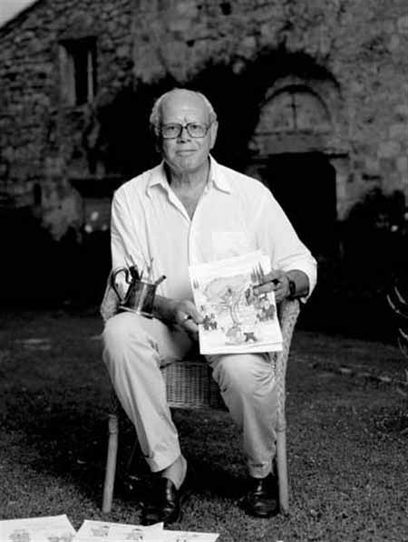

|
- EMILIO GIANNELLI -
PITTORE DEL PALIO DEL 2 LUGLIO 2018 |
|
 
Il drappellone per il Palio del 2 luglio, dedicato alla Madonna di Provenzano, è stato realizzato da Emilio Giannelli. Un senese che ha saputo far convivere, in parallelo, la professione di avvocato con quella di disegnatore e vignettista, una passione, quest’ultima, che lo accompagna da quando era bambino. Conosciuto e apprezzato a livello nazionale per quella sua vena satirica e profondamente toscana, capace di far sorridere e, soprattutto pensare, grazie a pochi, ma sapienti, tratti di china in grado di fare una sintesi dei fatti politici all’attenzione della stampa, è riuscito a regalare a Siena un drappellone che esce dagli schemi dell’arte pittorica più tradizionale. Riconoscibilissimo. Nessuna mediazione. Emilio Giannelli è, giustamente, rimasto l’artista che l’Italia conosce. Con il suo disegno caricaturale ha creato un vero e proprio omaggio ai suoi concittadini. Il drappo di seta, abilmente trattato con un fondo che lo fa sembrare un foglio di carta, è stato riempito da centinaia di persone. Ognuna con una propria mimica. Un’espressione. Una smorfia. La gioia, il dolore, il pathos, che i senesi vivono, racchiusi nella conchiglia di piazza del Campo, mentre il Palio si materializza con i suoi tre giri di corsa. Ogni segmento della sua opera racconta una storia per poi unirsi alle altre. E’ un cocktail di umanità. La signora che sviene per il caldo, o forse per la troppa empatia con i colori della sua contrada. Un accenno di rissa. Forse per una frase o un atteggiamento di troppo fra contradaioli rivali. C’è anche un tentativo di furto. C’è tutto quello che può accadere durante quella manciata di secondi che vede Siena dimenticarsi di tutto per inseguire un sogno. E’ un affresco in bianco e nero. Come nello stile Giannelli, ma non per questo meno emozionante. Giannelli, avendo spazio da mettere a disposizione della sua infinita creatività, è riuscito a materializzare sulla stoffa le sensazioni, anche attingendo alla tavolozza dei colori per i dieci cavalli che danno vita alla Carriera. Sempre a colori i fantini. Tutti di spalle, così da rappresentare sui loro giubbetti l’araldica contradaiola. Una scelta stilistica diversa e di grande effetto visivo. Una corsa sfrenata su quell’anello di tufo che viene per lo più immaginato, giocando sulla proposizione di una sezione del costruito che delimita la Piazza, e dove primeggia il Palazzo Pubblico e la Torre del Mangia. La tradizione ritorna sulla parte alta del drappo con l’effige della Madonna di Provenzano, ma anche in questo caso Emilio Giannelli affonda la mano nella sua senesità, per arricchire l’immagine sacra con un volo di rondini. Un richiamo, sicuramente, alle attese dell’infanzia, quando il loro garrire scandiva i tempi dello svago e, a Siena, quelli della sua grande Festa. Frammenti di raso in vari colori contornano il drappellone, quasi a voler materializzare le voci e le grida che immaginiamo uscire da quelle centinaia di bocche spalancate immortalate dall’artista senese. Tra la folla c’è anche lui. Un piccolissimo autoritratto per far parte del tutto, insieme ai suoi concittadini. Uno “sguardo” sul Palio da contradaiolo.   |